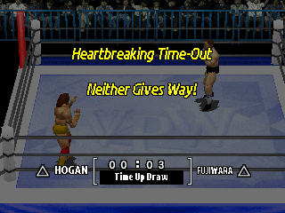

Winning and Losing
This page explains how a match of Virtual Pro Wrestling works: what hurts, what makes a pin stick, when a man gives up, how the computer opponent thinks, and what every option does. The buttons themselves are on the Play page; each wrestler's stats and moves are in the Wrestler Database.
Hidden health
A match is a long climb from 255 down to about −100, some 355 points. Big throws do 20 to 30 at a time, so expect a dozen or more good moves before the finish.
Every wrestler starts the match with 255 points of hidden health, whatever his size. There is no health bar: the only gauge on screen is the SPIRIT icon in each bottom corner. You read your opponent's health from how long he stays down and how fast he kicks out.
Health keeps falling below zero. Around −100 a wrestler is finished: that is where pins stick, holds make him give up and KO moves can end the match.
How a match ends
| Ending | When it happens | Winner | On screen |
|---|---|---|---|
| Submission | A hold squeezes a man whose health is below −100 and whose spirit is below 90 (Give Up!) | The man applying the hold | Give Up! |
| Pinfall | The referee counts three before the pinned man kicks out (Pins) | The pinner | Pin Fall! |
| KO | With the TKO rule on, a KO move lands on a man at −100 health or lower (KO) | The man still standing | He collapses |
| Ring-out | One man is still outside when the count reaches 20 (Ring-out) | The man inside the ring | Ring Out! |
| Double ring-out | Both men are outside when the count reaches 20 | Nobody: a draw | |
| Time up | The match clock reaches the Time Limit | Nobody: a draw | Time Up! |
There is no tag-team match: every bout is one against one, including the 5-a-side Elimination Match.
KO and the TKO rule
With a KO wrestler, a beaten opponent can drop at any moment, even while he still kicks out of pins. Against a KO wrestler, keep your health above −100 or keep your spirit up for the special, during which you cannot be knocked out.
With TKO on in Rule Settings, a match can end by knockout. All four of these must be true at once:
- the move is one of the wrestler's KO moves (listed below);
- the man it hits is left at −100 health or lower;
- he is inside the ring and not in his special;
- a 1 in 4 roll succeeds.
Ordinary throws and throws that end in a pin can never KO. Only 100 moves, belonging to 42 wrestlers, are KO moves; the other 18 wrestlers cannot win by KO at all. With TKO off there are no KOs.
Every KO move, by wrestler
| Wrestler | KO moves |
|---|---|
| Jyushin Thunder Lyger | Ultra Slap Combo, Super Fisherman Buster |
| Chris Benoit | Top Rope Spinning Power Bomb |
| Riki Chosu | Clothesline |
| Kensuke Sasaki | Fisherman's Brainbuster, Rolling Shoulder Throw |
| Black Tiger | Reverse Brainbuster, Top Rope Razor's Edge |
| Hiroshi Hase | Uranage Slam |
| Shinya Hashimoto | Brainbuster, Front Leg Roundhouse, Super Fisherman Buster |
| Scott Norton | Jackknife Powerbomb, High Angle German Suplex |
| Mitsuharu Misawa | Rolling Elbow, Spinning Elbow |
| Toshiaki Kawada | Release Tiger Suplex |
| Steve Williams | Backdrop Suplex, Release Tiger Suplex |
| Jumbo Tsuruta | Vertical Suplex to Body Slam, Lift-up Backdrop |
| Akira Taue | Chokeslam Drop |
| Stan Hansen | Jackknife Powerbomb, Short-Arm Lariat, Lariat |
| Gary Albright | Rolling Belly-to-Belly Suplexes, Rolling Front Dragon Suplex, Locomotion German Suplexes, Quick Release German Suplex, Release Full Nelson Suplex |
| Giant Baba | Clubbing Chop, Standing Big Boot, Torpedo Dropkick |
| Yoshiaki Fujiwara | Power Headbutt, Neck Wringer |
| Masakatsu Funaki | Slap Combo to Knee Strike, Spinning Backhand Chop |
| Minoru Suzuki | Neck Wringer, Standing Roundhouse |
| Kazuo Yamazaki | Foot Sweep to Kick Combo, Locomotion German Suplexes |
| Akira Maeda | Spin Kick Combo, Brutal Kick Combo, Rolling Kick |
| Nobuhiko Takada | Slap to Triple Kick Combo, Knee Strike to Double Slap to Three Kick Combo, Standing Roundhouse, Jump Spinning Back Kick to Gut |
| Ken Shamrock | Release Full Nelson Suplex, Standing Roundhouse |
| Yoji Anjoh | Foot Stomps to Kick |
| Bas Rutten | Palm Thrust |
| Tarzan Goto | Power Headbutt, Headbutt |
| Hayabusa | Fisherman's Buster, Screwdriver |
| Genichiro Tenryu | Sumo Slap Combo to Rolling Heel Kick |
| Koji Kitao | Axe Kick Combo, Uranage Slam, Standing Axe Kick |
| Power Warrior | Rolling Shoulder Throw, Fisherman's Brainbuster, Standing Clothesline |
| Vader | Choke Slam, Jackknife Powerbomb, Standing Lariat, German Back Drop, High Angle German Suplex, Standing Enzuigiri Slam |
| Rick Steiner | Release Full Nelson Suplex |
| The Great Muta | Neck Wringer |
| Hulk Hogan | Forearm Smash, Standing Lariat |
| Scott Steiner | Screwdriver, Reverse Brainbuster |
| Hawk | Flying Clothesline |
| Dynamite Kid | Snap Suplex, Cradle Piledriver, Screwdriver, Snap Belly-to-Back Suplex, Reverse Brainbuster, Top Rope Razor's Edge, Diving Headbutt |
| Terry Funk | Stiff Jabs to Punch |
| Antonio Inoki | Elbow Breaker, Stiff Right Punch, Left/Right Hook Combo to Thigh Kick to Scissors, Neck Wringer, Jumping Roundhouse |
| Bruiser Brody | Top Rope Razor's Edge, Leg Drop, Double Knee Drop |
| Tiger Mask | Tombstone Piledriver |
| Andre the Giant | Smash Face on Knee, High Angle German Suplex, Standing Big Boot, Hip Check, Big Splash, Body Splash |
No KO move: Tatsumi Fujinami, Hiroyoshi Tenzan, Keiji Mutoh, Masahiro Chono, Shiro Koshinaka, Kenta Kobashi, Volk Han, Atsushi Onita, Sabu, The Great Sasuke, Super Delphin, TAKA Michinoku, Jinsei Shinzaki, Ultimo Dragon, Ric Flair, Sting, Mil Mascaras, Karl Gotch.
Ring-out
Outside the ring the count gives you plenty of time: 40 seconds. A computer wrestler alone outside comes back in by count 17, so it never loses by ring-out on its own. Pins do not count outside the ring.
With Ringout Count on, the referee counts while either wrestler is outside: one number every 2 seconds, shown big on screen. At 20 (40 seconds) the man outside loses; if both are outside, the match is a draw. When both are back inside, the next count starts again from 0. With Ringout Count off you can stay outside as long as you like.
Going over the top rope to the floor, thrown or by a fall, costs 7 health and 5 spirit.
Time limit and draws

The Time Limit can be Unlimited, 5, 10, 30 or 60 minutes. The clock at the top right always counts up, in real time; when it reaches the limit the bout ends as a draw (Time Up!). A match is also drawn by a double ring-out.
The result screen shows the winner's name with a phrase such as Total Victory!, then a bar with the time and how it ended: ○ beside the winner, × beside the loser, △ beside both after a draw. Choosing Skip Match on the pause menu (Start) ends the bout as a Time Up Draw.
One fall or three
The man who just lost a fall starts the next one healthier than he ended the last: anyone below 50 comes back with 100 or more. Winning the first fall barely puts you ahead on health, so open the second fall as carefully as the first.
With Falls set to 3 Falls, a match is best of three. It ends when one man leads 2-0; otherwise all three falls are wrestled. A drawn fall counts as a fall won by both men.
Between falls, spirit and body parts start fresh (50 each), but health carries over, topped up:
| Health at the end of a fall | Health at the start of the next |
|---|---|
| 100 or more | Unchanged |
| 50 to 99 | 150 |
| 0 to 49 | 125 |
| Below 0 | 100 |
Spirit and the Special
Spirit is each wrestler's fighting spirit, from 0 to 100. Everyone starts every fall at 50. It decides whether you can be pinned, whether you give up, whether you can counter, and at 100 it gives you the special move.
The SPIRIT icon
The SPIRIT icon in your corner of the screen (bottom left for 1P, bottom right for 2P) changes colour with your spirit, in steps of 10 (table below).
Spirit drifts back toward 50 on its own: about every 4 seconds it drops by 1 if it is above 50, and rises by 2 if it is below 50 (by 3 if it is below 31). The Spirit Gauge option in Game Settings only hides the icons; spirit still works the same.

| Spirit | Icon colour | What it means |
|---|---|---|
| 0 to 29 | Almost black red | No counters; easy to pin |
| 30 to 49 | Dark red | Counters possible from 36 |
| 50 to 69 | Bright red | Where every fall starts |
| 70 to 89 | Salmon pink | Counters likely; harder to pin |
| 90 to 99 | White | Cannot be pinned, cannot give up |
| 100 | Flashing white | The special |
Gaining and losing spirit
| What happens | Spirit |
|---|---|
| Your move lands | 0 to +7, by move (see Move power) |
| Your move lands while your health is below 48 | 3 more on top |
| You are hit | −2 to −7 for most moves |
| You are hit by a far tap grapple | +8 |
| Each squeeze of a ground hold on you | +4 |
| Taunt (L2) | +5 (+2 outside the ring) |
| Leapfrog a running opponent (L1) | +3 |
| Your guard (Square) blocks a strike | +2 |
| You kick out of a pin | +10 |
| You get back up after some knockdowns | +10 |
| You go over the top rope to the floor | −5 |
The levels that matter
| Level | Effect |
|---|---|
| Spirit 36 | Below it you cannot counter a grab, an Irish whip or a corner move. From 36 up, the chance to counter a close grab is your spirit in percent. |
| Health 48 | Below 48 health, every move you land gives 3 extra spirit: the comeback rule. |
| Spirit 90 | From 90 you cannot be pinned and cannot be made to give up. |
| Spirit 100 | The special: 30 seconds with your finishing move on call. |
The special move
Spirit is the real gauge of the match. Taunt when you are safe, block strikes, and kick out of pins to build it; at 90 you are safe from pins and submissions, and at 100 you have 30 seconds to land the special and pin on top of it. Watch his icon too: a white icon means pinning him is useless.
When your spirit reaches 100, your wrestler strikes a short flash pose (you cannot act for about a second), his SPIRIT icon flashes white, and for 30 seconds he is in his special. After exactly 30 seconds his spirit drops back to 50.
During the special, hold Circle on the opponent for about a second and release: that is the special move, power 30. Six wrestlers have a hold as their special, which squeezes for 8 per second instead. While in the special:
- your spirit cannot fall: no losses from hits and no drift;
- you cannot be knocked out;
- every light strike knocks the opponent hard, as if it were the end of a long string;
- your pins are stronger: your spirit of 100 adds 25 to his kickout time, against 12 at spirit 50 (see Pins).
Damage
How much a move hurts
Damage = the move's power + 10% of its power for every point your offence stat is above his defence stat
Each move has a power and uses one of your six offence stats against one of his six defence stats. If his defence is equal to or higher than your offence, the move does exactly its power: a high defence never takes anything off. The extra is rounded down. Spirit does not change damage.
The power is also scaled by the condition of your own body part that the move uses: full at the bell, down to half power when that part is worn out (see wear).
Damage with fresh body parts, by how far your offence is above his defence:
| Move (power) | Equal or lower | +1 | +2 | +3 | +4 |
|---|---|---|---|---|---|
| Light strikes (2-3) | 2-3 | 2-3 | 2-3 | 2-3 | 2-4 |
| Far tap grapple (8) | 8 | 8 | 9 | 10 | 11 |
| Close tap grapple (14) | 14 | 15 | 16 | 18 | 19 |
| Close tap + Down (18) | 18 | 19 | 21 | 23 | 25 |
| Hold grapple (20) | 20 | 22 | 24 | 26 | 28 |
| Hold + Down (24) | 24 | 26 | 28 | 31 | 33 |
| Special (30) | 30 | 33 | 36 | 39 | 42 |
The six stats
Every wrestler has six offence and six defence stats, each from 1 to 5, and six body parts that go with them. Which stat a move uses depends on the move, not on the button:
| Stat | Offence powers | Defence guards against |
|---|---|---|
| Head | Headbutts, and every counter | Slaps and punches to the face, brainbusters, piledrivers, high kicks, dropkicks |
| Neck/Back | Snapmares, suplexes, neckbreakers | German and backdrop suplexes, neckbreakers, chops to the chest |
| Arms | Slaps, punches, elbows, chops, body slams, arm locks | Arm breakers, arm bars, shoulder breakers |
| Body | Piledrivers, German suplexes, powerbombs, Boston crab, gut wrench | Body slams, kicks and knees to the body, crabs, camel clutch |
| Legs | Kicks, knees, leg drops, dropkicks | Low kicks, leg locks, drop toe holds, dragon screw |
| Aerial | Top-rope attacks, dives, splashes | Top-rope attacks only |
Body is only ever 1 or 2, for everyone, on both offence and defence. Example: Stan Hansen has Arms offence 5 and Ric Flair has Arms defence 2, so every arm move Hansen lands on Flair does 30% more than its power. 40 of the 60 wrestlers have no dives at all; for them the dive inputs do nothing. Each wrestler's twelve numbers are in the Wrestler Database.
Body-part wear
Pick moves that use your best offence stat against his weakest defence: four points of difference is +40%. Wearing down a body part is a way to blunt his offence, not to hurt him faster: work the legs of a kicker and his kicks lose up to half their power.
Every move also wears down one of the victim's body parts, from 50 at the bell toward 0: 1 point for a light strike, up to 5 for a special (see the table below). Wear does not make the victim take more damage. It weakens his own moves that use that part: a part at 0 makes those moves do half their power. Body parts are fresh again at the start of each fall.
Move power by input
The far tap grapple is a poor move: little damage and +8 spirit for the man you throw. The close tap and the hold grapple are where the damage is, and the corner grab (25) and the hold from behind (24-26) are the biggest moves outside the special. Strikes are for building strings, not damage.
Power and spirit change are set by the input, the same for nearly every wrestler (the move names for each wrestler are in the database):
| Input | Power | Your spirit | His spirit | Wear |
|---|---|---|---|---|
| Cross tap, near or far | 2 | +2 | −2 | 1 |
| Cross held, near or far | 3 | +3 | −3 | 1 |
| Far tap / + Up / + Down | 8 / 10 / 12 | +3 | +8 | 2 |
| Close tap / + Up / + Down | 14 / 16 / 18 | +5 | −3 | 3 |
| Hold / + Up / + Down | 20 / 22 / 24 | +1 | −5 | 4 |
| Special | 30 | 0 | −7 | 5 |
| From behind, tap | 18-20 | +3 | −3 | 3 |
| From behind, hold | 24-26 | +2 | −5 | 4 |
| Triangle + Circle from standing | 6-8 | +3 | −3 | 2 |
| Cross while running | 12-15 | +5 | −5 | 3 |
| Tap Circle as he runs at you | 10 | +1 | +2 | 2 |
| Hold Circle as he runs at you | 15 | 0 | −2 | 3 |
| Punch reversal (Square + Cross) | 10 | +5 | −5 | 2 |
| Kick reversal (Square + Cross) | 10 | +7 | −7 | 2 |
| Strong grab on a dazed man in the corner | 25 | +5 | −5 | 4 |
| Reversal of the corner grab | 10 | +2 | −3 | 1 |
| Counter to a close tap | 0 | +7 | −5 | 0 |
| Ground hold, each squeeze | 3 | 0 | +4 | 1 |
| Cross on a lying man | 2-4 | 0 | +1 | 1 |
| Top-rope attack, lying man | 18 | +5 | −4 | 3 |
| Top-rope attack, standing man | 12 | +3 | −2 | 2 |
The hold grapple of some wrestlers is 22 to 24 even without a direction. A hold from behind is a squeezing hold for some wrestlers (6 per squeeze). Your spirit gain is 3 more when your health is below 48, and nothing changes the spirit of a wrestler in his special.
Strike strings
Each light strike in a row raises a hit count, and the reaction gets bigger the longer the string goes. Being knocked down resets the count.
| Strike in the string | Reaction |
|---|---|
| 1st to 3rd | Small flinch |
| 4th | 15% chance of a medium reaction |
| 5th | 25% medium |
| 6th | 50% medium |
| 7th | 50% big, 10% medium |
| 8th to 11th | 80% big, 20% medium |
| 12th | Always big |
A wrestler in his special always causes the big reaction.
Pins, Holds and Getting Up
Times on this page are in seconds; the game's own timers run in thirtieths of a second, and the formulas below use that unit.
Getting up
Time on the mat = 200 − his spirit − half his health (no less than 0), in thirtieths of a second
Every further knockdown before he has stood up again takes another 2 seconds off. Mashing face buttons takes off 1/30 s for every three presses; holding Square doubles the time (stay down on purpose).
| Health | Spirit 20 | Spirit 50 | Spirit 80 |
|---|---|---|---|
| 255 (fresh) | 1.8 s | 0.8 s | at once |
| 150 | 3.5 s | 2.5 s | 1.5 s |
| 50 | 5.2 s | 4.2 s | 3.2 s |
| 0 or less | 6.0 s | 5.0 s | 4.0 s |
Pins and kickouts
Press Triangle next to a lying opponent to cover him, whatever put him down. Throws marked † in the move lists end in a pin by themselves. Once the cover is on, the pinned man has a kickout time:
Kickout time = 110 + the pinner's spirit ÷ 4 − his health − his spirit, in thirtieths of a second
His health counts no lower than −100. The referee counts once a second, so it is a Pin Fall! only when the kickout time is more than 90 (three seconds). Every three face buttons he presses take 1/30 s off. A wrestler with spirit 90 or more always kicks out before three.
A fresh opponent always kicks out at once. Pin when he is below 0 health and his spirit is low, right after a big move has drained both, and pin while your own spirit is high: best of all with your special. Every failed pin hands him 10 spirit. When you are pinned, mash, and keep your own spirit at 90 or more when you are hurt.
The highest health at which a pin still wins, without mashing:
| His spirit | Your spirit 0 | Your spirit 50 | Your spirit 100 (special) |
|---|---|---|---|
| 0 | 19 | 31 | 44 |
| 25 | −6 | 6 | 19 |
| 50 | −31 | −19 | −6 |
| 75 | −56 | −44 | −31 |
| 89 | −70 | −58 | −45 |
| 90 or more | never | never | never |
A kickout gives the man who kicked out +10 spirit. The pinner can let go with Square. With Rope Break on, a pin is broken when the man underneath is at the ropes. Outside the ring the referee does not count.
Holds and escapes
A hold (ground holds, holds from behind, and the specials that are holds) squeezes about once a second: 3 per squeeze for a ground hold, 8 for a submission special. The man in the hold has an escape time:
Escape time = (300 − his health (no less than 0) − his spirit ÷ 4) ÷ 2, in thirtieths of a second
At most 5 seconds. Every three face buttons he presses take 1/30 s off. He can also crawl: a face button with a direction moves him that way, toward the ropes for a rope break.
| His health | Spirit 0 | Spirit 50 |
|---|---|---|
| 255 (fresh) | 0.7 s | 0.5 s |
| 150 | 2.5 s | 2.3 s |
| 50 | 4.2 s | 4.0 s |
| 0 or less | 5.0 s | 4.8 s |
With Rope Break on, a hold whose victim reaches the ropes is broken (Rope Break!).
Give Up!
Holds are finishers, not a way to wear him down: a ground hold does 3 a second for a few seconds and gives him 4 spirit with every squeeze. Put one on only when he is already near −100 health and his icon is not white; with Rope Break on, apply it away from the ropes.
After each squeeze of a submission hold (marked ‡ in the move lists), the victim gives up if his health is below −100 and his spirit is below 90, as long as the man applying the hold is inside the ring. There is no give-up button: you cannot surrender, and the computer never taps early.
Counters
| Situation | What to press | Chance |
|---|---|---|
| Grabbed with a close tap, or a tap from behind | Any face button right at the grab | Your spirit in percent, from spirit 36 |
| Strong grab on you while dazed in the corner | Face buttons straight away | Each press: 3 × your spirit in 1000 (30% at spirit 100) |
| A Cross strike coming | Square to guard, or Square + Cross to catch it | A caught strike is reversed |
| A grab coming | R1 to step back | The grab misses |
The CPU
Difficulty (Easy, Normal or Hard, in Game Settings) changes only how the computer wrestler plays. Damage, health, spirit and the rules are the same on every level. The computer presses the same buttons you do, through the same rules: every number on this page applies to it too.
Up close
When the computer is close to you, both of you are in the ring and it is free to act, 80% of its decisions are an attack:
| Attack | Share |
|---|---|
| Tap grapple (Circle; with Up 35%, Down 32%, no direction 33%) | 25% |
| Cross strike (55% tapped, 45% held) | 20% |
| Circle grapple with a direction | 20% |
| Hold grapple, or the special while it has one | 10% |
| Guard (Square) | 10% |
| Catch stance (Square + Cross) | 10% |
| Dash attack (Triangle + Circle) | 5% |
From further away it walks in: straight at you 40% of the time on Easy, 60% on Normal, 80% on Hard, otherwise it wanders. When you run at it off the ropes, it meets you with the Circle counter-throw 70% of the time.
When you are down
| Its choice, with you lying close by | Easy | Normal and Hard |
|---|---|---|
| Stomp (Cross) | 20% | 40% |
| Pull you up (Square) | 20% | 37%, always when its health is below 120 |
| Ground hold (Circle) | 20% | 20% |
| Taunt | 20% | 3% |
| Pin (Triangle) | 15% | never from close by |
| Walk about | 5% | never |
On Normal and Hard the computer pins only from further off, and only once its own health is below 30. After pulling you up on Normal and Hard, with its health at 100 or more it goes for a tap grapple 40%, a hold grapple 20%, steps back 20%, dashes 12%, walks 5% and strikes 3%; with its health below 100 it steps back.
Reactions
On Easy the computer never reacts to what you do. On Normal and Hard, while it is standing free:
| You | It answers with | Normal | Hard |
|---|---|---|---|
| Run at it | Guard | 20% | 80% |
| Throw a Cross strike | Catch stance, reversing the strike | 30% | 90% |
| Start a Circle grapple | A strike to interrupt you | 40% | 90% |
| Start a grapple, otherwise, when not too far | Step back (R1), so the grab misses | 40% | 90% |
Escapes and mashing
How often the computer presses a button, every thirtieth of a second, when it is caught:
| Situation | Easy | Normal | Hard |
|---|---|---|---|
| Being grabbed (its counter chance, at spirit 36 or more) | 10% | 50% | 80% |
| Whipped into the ropes or a corner | 5% | 20% | 50% |
| Lying down, in a hold, dazed | 3% | 30% | 80% |
When pinned, it keeps pressing buttons, which counts as mashing.
Outside the ring
A computer wrestler alone outside heads back in when the count reaches 17 or its spirit is 71 or more. Before that it wanders about (80% on Easy, 40% on Normal, 30% on Hard), or goes back in, or taunts. If it has you in a hold outside, it lets go at count 16 to get back in.
Easy, Normal, Hard
| Level | How it plays | How to beat it |
|---|---|---|
| Easy "For fighting-game beginners" | Never reacts to what you do (it guards only at random), mashes slowly, pins early and often, and fails. | Throw and strike freely. |
| Normal "Start here!" | Blocks or reverses about a third of the time; gets up and escapes holds faster. Beats you down, pulls you up and pins late. | Mix strikes and grapples; pin after your biggest moves. |
| Hard "For fans and hardcore gamers" | Guards running attacks, catches strikes and answers grabs 80-90% of the time; mashes almost constantly, so pins and holds end early. | Grab it when it is busy: just after its own move or as it gets up. Work it over while it is on the mat. |
Options
Ringout Count off removes the ring-out finish; TKO off leaves pins, submissions and time as the only endings. With Rope Break off, nothing at the ropes saves the man underneath, you included.
On the title screen, Options holds Load, Save, Belt Record, Game Settings, Rules and End. Press Circle on a two-value setting to switch it; on a setting with more values it opens a list. Defaults are in bold.
Game Settings
| Setting | Values | What it does |
|---|---|---|
| Difficulty | Easy / Normal / Hard | How well the computer wrestlers play (The CPU). Nothing else changes. |
| Spirit Gauge | ON / OFF | OFF hides the SPIRIT icons. Spirit and the special still work. |
| Camera Angle | ON / OFF | ON: the view changes when a big move connects. |
| Sound Setup | Stereo / Mono | Music and sound effects in stereo or mono. |
Rule Settings
| Setting | Values | What it does | Where it applies |
|---|---|---|---|
| Mat Select | Random / NSW / EWF / WOU / DAW / ILW / IAWA | The ring mat. A promotion gives its own mat (one of its two, ILW has one). Random picks from 21 mats, including 10 you can get no other way (see Secrets). | Official Match always uses the promotion's mat. |
| Time Limit | Unlimited / 5 Min / 10 Min / 30 Min / 60 Min | At the limit the bout is a draw (Time Up!). | Official, Exhibition, Elimination and Tournament. |
| Falls | 1 Fall / 3 Falls | 3 Falls: best of three, with health carried over (falls). | Exhibition only; Official, Elimination and Tournament are always 1 Fall. |
| Ringout Count | ON / OFF | ON: the 20-count outside the ring (Ring Out!). OFF: no count, no ring-outs. | |
| Rope Break | ON / OFF | ON: pins and holds are broken when the man underneath is at the ropes. | |
| TKO | ON / OFF | ON: KO moves can end the match (KO). OFF: no KOs. |
Strategy at a Glance
| Situation | Do this | Because |
|---|---|---|
| Start of the match | Close tap and hold grapples; avoid far taps | Grapples do 14-24; a far tap does 8 and gives him 8 spirit |
| Choosing moves | Use moves of your best offence stat on his weakest defence | Each point of difference is +10% damage |
| Safe moment, spirit low | Taunt (L2) | +5 spirit; 36 is needed for counters, 90 makes you pin-proof |
| Your spirit reaches 100 | Hold Circle about a second and release within 30 seconds, then pin | The special does 30, and your spirit of 100 makes the pin stronger |
| He is down after a big move | Pin (Triangle) only when he is below 0 health and his icon is dark | A fresh or high-spirit man kicks out and gains 10 spirit |
| His icon is white | Keep hitting; do not pin or hold | At 90+ he cannot be pinned or give up |
| He is around −100 health | Submission hold away from the ropes, or a KO move with TKO on | Give Up! needs health below −100 and spirit below 90 |
| You are pinned or in a hold | Mash face buttons; crawl to the ropes in a hold | Mashing shortens the count and the hold; Rope Break frees you |
| Strikes coming at you | Guard with Square or catch with Square + Cross | A block gives +2 spirit; a caught strike is reversed |
| Grabs coming at you | Step back with R1 | The guard does not stop grabs |
| Against Hard | Grab just after its move or as it gets up | It answers 80-90% of grabs and strikes while it stands free |
| Three falls | Treat the second fall like a new match | Health is topped up to 100 or more for anyone hurt |
More tips, and how the controls work, on the Play page.